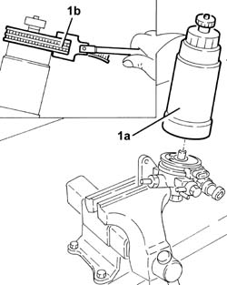
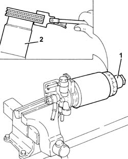

1044B20 fuel filter filtering element - replace
- Path
- Procedures > 10 ENGINE > 1044 FUEL CIRCUIT PUMP/AND DEVICES > 1044B fuel filters > 1044B20 fuel filter filtering element - replace
- Kind
- repair procedure (removal / refitting; the operation number is the code)
- Applies to
- engines: 1.9 JTD 8v , 1.9 JTD 16v, 2.4 JTD 10v, 2.4 JTD 20v; all production periods
- Interactive page
- https://sloeber94.github.io/elrnDB-a156/en/#/3237779
Applies to: engines: 1.9 JTD 8v , 2.4 JTD 10v; all production periods
 Removing
Removing
 Refitting
Refitting1044B10 fuel filter assembly - r + r or replace
Position the complete fuel filter in a vice fitted with protective jaws.
1. Undo and remove the filter element (1a) for the fuel filter using a suitable tool (1b).

Applies to: engines: 1.9 JTD 8v , 2.4 JTD 10v; all production periods
Refitting
RemovingFit a new filter element on the fuel filter and tighten it fully by hand.
Remove the complete fuel filter from the vice.
Applies to: engines: 1.9 JTD 16v; all production periods
Removing
RefittingPosition the vehicle on the ramp.
Proceed with removal 1016A10 sound-proofing cover - r + r .
Ensure that the ignition key is in the OFF position, then disconnect the negative battery terminal (-).
 | Name | Connector |
|---|---|---|
- | Battery |
Proceed with removal 7055B54 under-engine guard - r r .
Proceed with removal 1044B10 fuel filter assembly - r + r or replace .
Position the fuel filter in a vice fitted with protective jaws.
1. Undo and remove the fuel filter water presence sensor.
2. Undo and remove the fuel filer's filter element using a suitable tool.

Applies to: engines: 1.9 JTD 16v; all production periods
Refitting
RemovingFit a new filter element on the fuel filter and tighten it fully by hand.
Place the fuel filter water presence sensor in its housing.
Proceed with refitting 1044B10 fuel filter assembly - r + r or replace .
Proceed with refitting 7055B54 under-engine guard - r r .
Connect the negative (-) battery terminal.
Proceed with refitting 1016A10 sound-proofing cover - r + r .
Remove the car from the ramps.
Applies to: engines: 2.4 JTD 20v; all production periods
Removing
RefittingProceed with removal 1016A10 sound-proofing cover - r + r
Proceed with removal 1044B10 fuel filter assembly - r + r or replace
Position the fuel filter assembly in a vice fitted with protective jaws.
1. Undo and remove the fuel filter water presence sensor.
2. Undo and remove the fuel filer's filter element using a suitable tool.
Applies to: engines: 2.4 JTD 20v; all production periods
Refitting
RemovingFit a new filter element on the fuel filter and tighten it fully by hand.
Place the fuel filter water presence sensor in its housing.
Proceed with refitting 1044B10 fuel filter assembly - r + r or replace .
Proceed with refitting 1016A10 sound-proofing cover - r + r .
Topics linked from this page (4)
- 1016A10 sound-proofing cover - r + r
- 1044B10 fuel filter assembly - r + r or replace
- 7055B54 under-engine guard - r r
- A1B Battery ( BATTERY NEGATIVE )
Topics that link to this page (18)
- B10 ENGINE DOES NOT START / UNDER NO CIRCUMSTANCES
- B13 ENGINE STARTS WITH DIFFICULTY'
- B20 ENGINE STARTS, AND CUTS OUT STRAIGHT AWAY
- D04 ENGINE NOT RUNNING SMOOTHLY
- D05 ENGINE DOES NOT PRODUCE BEST PERFORMANCE
- D10 ENGINE IDLE IRREGULAR
- D21 ENGINE CUTS OUT WHILST DRIVING
- X01 EXCESSIVE FUEL CONSUMPTION
- 0010K20 20,000km service coupon, emission control version
- 0010K40 40,000km service coupon, emission control versions
- 0010K60 60,000km service coupon - emission control versions
- 0010K80 80,000km service coupon - emission control versions
- 0010M01 100,000km service coupon, emission control versions
- 0010M20 120,000km service coupon, emission control versions
- 0010M40 140,000km service coupon - emission control versions
- 0010M60 160,000km service coupon - emission control versions
- 0010M80 180,000km service coupon - emission control versions
- 1044D10 fuel heater - r + r